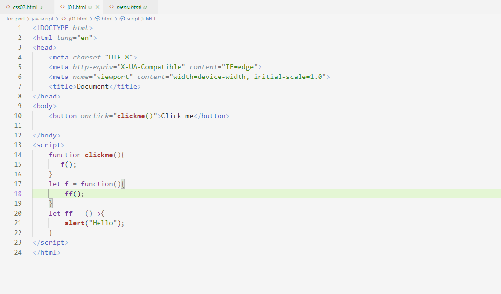
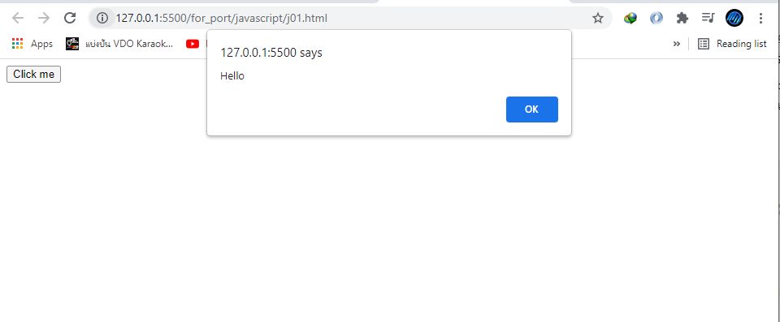
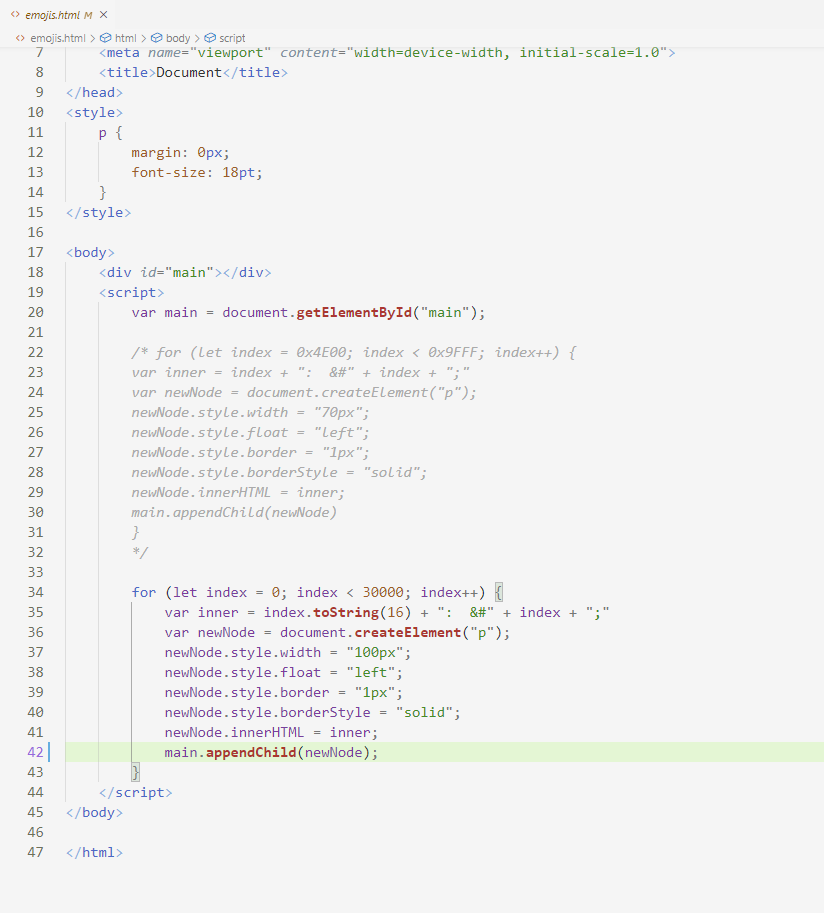
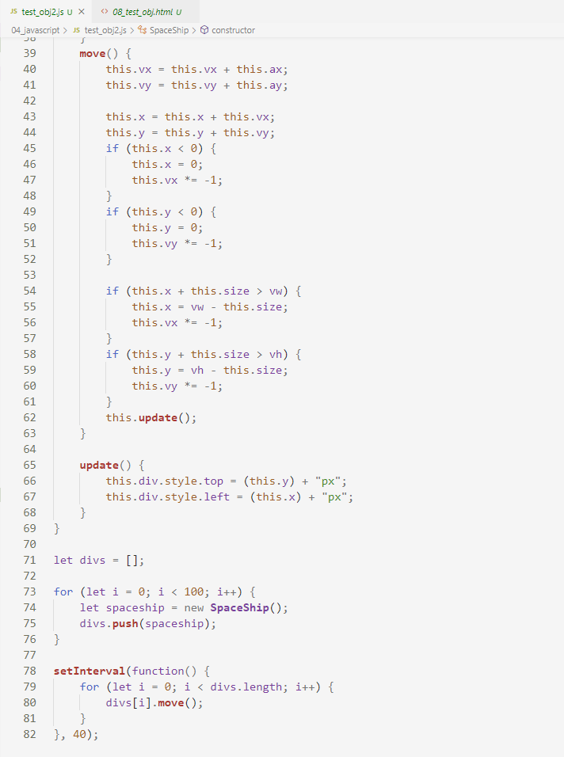
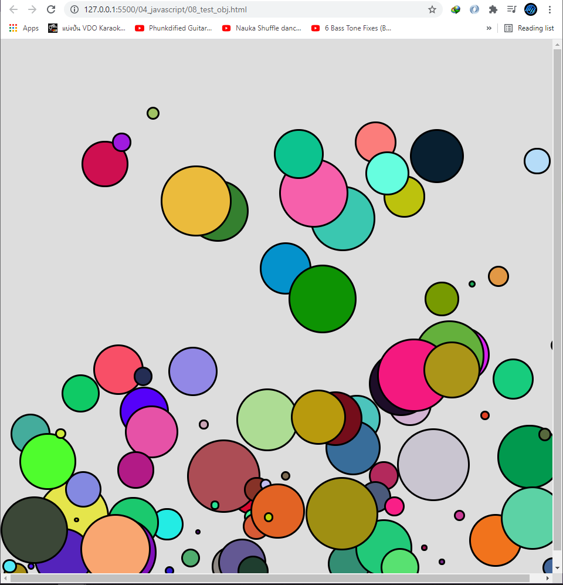

JavaScript
JavaScript คือภาษาที่ไว้ใช้เกี่ยวกับการคำนวณต่างๆใน web site ของเราซึ่งทำงานในฝั่ง client เช่น การเขียน function การบวก, ลบ, คูณ, หาร if-else วนลูปแล้วนำผลลัพธิ์ที่ได้มาแสดงผลใน html ซึ่งในตัวอย่างจะแสดงการเขียน function ที่สามารถเขียนได้ถึง 3 รูปแบบดังรูปด้านล่าง

จากรูปจะเห็นได้ว่าการเขียนนั้นจะต้องอยู่ใน tag script และด้านในจะมี function ที่เขียนแตกต่างกัน โดยเมื่อคลิ๊กที่ปุ่ม Click me จะแสดงข้อความ Hello ตามรูปด้านล่าง


โดยการทำงานนั้นจะให้ function clickme ไปเรียก function f และ ff ที่มีการเขียนต่างกันแต่ก็สามารถทำงานได้อย่างปกติดังรูปด้านบนนอกจากนี้ยังสามารถเขียน function แยกไว้เป็น file.js แล้วใช้ tag script import file ดังกล่าวเข้ามาได้อีกด้วยต่อมาจะเป็นการทดลองการวนลูปและแสดงผลออกมาทาง html

โค้ดด้านบนคือการวนลูปเพื่อแสดงอักษรและ emoji ต่างๆใน uft-8 โดยขั้นตอนแรกทำการเก็บ element ที่จะแสดงไว้ในตัวแปร main ต่อมาให้ทำการวบลูป 30000 ครั้งซึ่งในแต่ละครั้งจะนำเลขฐาน 16 และ อักษรตามรหัส ascii ที่วนลูปเก็บไว้ในตัวแปร inner ต่อมาให้ทำการสร้าง element ขึ้นมาใหม่ในที่นี้คือ tag p เก็บไว้ในตัวแปร newNode ทำการจัดแต่งด้วย css เพื่อความสวยงาม และเซ็ตข้อความใน tag p เป็นตัวแปร inner สุดท้ายทำการ appendChild ลงใน main ซึ่งผลลัพธิ์ที่ได้จะเป็นตัวอักษรและ emoji ทั้งหมดใน utf-8 ดังรูปด้านล่าง

นอกจากนั้นยังสามารถเขียนเป็น class หรือ เขียนในรูปแบบ OOP เหมือนภาษาเขียนโปรแกรมทั่วไปได้อีกด้วย ดังตัวอย่างด้านล่างได้ทดลองสร้าง class ชื่อ Spaceship ขึ้นมา

ใน class นั้นได้ทำการสร้าง div ขึ้นมาและทำการ random ขนาดและ ตำแหน่ง จากนั้นทำให้มีลักษณะกลมโดยใช้ borderRadius เสร็จแล้วให้เพิ่มเข้าไปใน div main_frame
ต่อมาก็มี function move() ซึ่งจะทำให้ div ขยับตาม vx และ vy เป็นตัวแปรแทนอัตรการเร่ง และ ax, ay แทนอัตรแรงโน้มถ่วง ทำการบวก vx,vy และ ax,ay จากนั้นค่อยนำไปบวกกับ x, y ของ div ดังกล่าว ต่อมาจะเป็นในเรื่องของ condition จะมีการเช็คว่าวัตถุชนขอบหรือยัง ถ้าชนแล้วจะให้ vx, vy คูณกับ -1 เพื่อให้วัตถุเด้งกลับไปทางตรงกันข้าม และเรียก function update() เพื่อทำการกำหนดค่าตำแหน่งที่ได้จากการคำนวณด้านบนเพื่อให้แสดงผลทางหน้าจอ หลังจากนั้นได้ทำการวนลูป 100 ครั้งเพื่อทำการสร้าง spaceship จำนวน 100 ลำ และใส่ลงไปใน Array จากนั้นทำการ setInterval จะทำหน้าที่เหมือน thread จะทำงานซ้ำๆทุกๆ 40 millisecond เพื่อให้ spaceship ทั้ง 100 ลำขยับไปมาตาม function ที่เขียนจาก นั้นได้ทำการสร้าง file.html มาเพื่อทำการทดลอง class ที่สร้างขึ้นมา ผลลัพธิ์ที่ได้ตามรูปด้านล่าง
